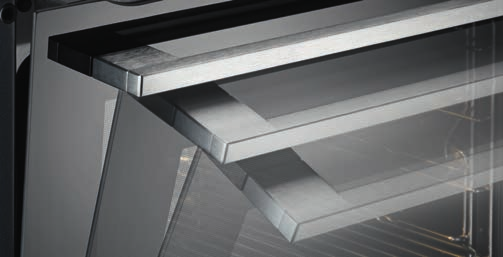
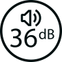
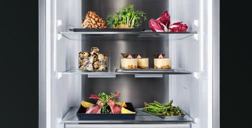

ZBAVTE SE STEREOTYPŮ
AEG
VÍCE NEŽ OČEKÁVÁTE
Kategorie AEG


MULTIFUNKČNÍ
PARNÍ TROUBY
Populární metodu Sous-Vide nejraději využívám při přípravě mas, ryb a zeleniny. Vakuum zachová výraznou chuť pokrmu, jeho charakteristickou strukturu i vitamíny. Mnoho lidí považuje vaření metodou Sous-Vide za komplikované a vhodné jen pro profesionální kuchyně. Přitom už dávno nejde o výsadu restaurací, a to díky multifunkční parní troubě.
Features of the category parní trouby
-
STEAMIFY®
S funkcí Steamify® je příprava jídel snadnější. Stačí zadat teplotu pečení jako obyčejně a trouba automaticky upraví nastavení, aby pára dovedla vaše pokrmy k dokonalosti.
MartinaJídlo je díky páře mnohem šťavnatější a rychleji připravené. Funkce Steamify je super, nemusím troubu složitě nastavovat, trouba si sama určí, kolik páry potřebuje.
-
SOUS-VIDE
Při použití funkce Sous-Vide, tedy vakuového vaření, se jídla připravují při nižších teplotách, díky čemuž jsou pokrmy chutnější a zdravější. Vakuum uchová všechny vůně, chutě a živiny.
BenKoupili jsme si jak vakuovačku, tak parní troubu AEG a jsme unešeni. Díky SousVide si neuvěřitelně pochutnáme. Třeba maso a ryby nebo i zelenina mají úplně jinou chuť, není to suché nebo bez chuti. Tahle investice stála za to.
-
SENZOR VLHKOSTI
Pokročilý senzor vlhkosti automaticky nastaví správné množství páry, čímž zajistí šťavnatou texturu a intenzivní chuť jídla.
JanaJedná se o naši druhou parní troubu. Rozhodli jsme se pro nejvyšší model se senzorem vlhkosti. Jednoduché ovládání a ještě lepší výsledky než předtím.
-
STEAMBOOST
Vyzkoušejte pečení v páře a horkém vzduchu. Díky této kombinaci získáte dokonale upečený pokrm s bohatou chutí vašich potravin.
LenkaVelmi mě baví objevovat nové funkce. Pečené maso z této trouby je velmi šťavnaté, domácí hranolky, chleba, knedlíky vynikající. Vše, co jsem zatím upekla a uvařila, nemá chybu.
-
OTOČNÝ OVLADAČ
S citlivým otočným ovladačem máte naprostou kontrolu nad procesem vaření, nastaveními času, teploty i funkce trouby. Aktuální nastavení se zobrazí na jasném barevném LCD displeji.
KamilaVestavná trouba s parní funkcí SteamPro zakoupena pro pěkný design. Uživatelsky je příjemné ovládání pomocí otočného ovladače. Velmi intuitivní, velmi jednoduché!
-
VYUŽIJTE VÁŠ SPOTŘEBIČ NAPLNO
TStáhněte si aplikaci My AEG a získejte užitečné rady i spoustu inspirace. Naučte se využívat parní trouby na maximum a objevte nové recepty, s nimiž dosáhnete úžasných kulinářských výsledků.
MilanJiž mám několikátou parní troubu, ale toto je téměř dokonalý produkt. Všechny funkce trouby jsou vyladěné a propojené s online aplikací pro její pohodlné ovládání. Přes kameru se dá sledovat už i samotný průběh pečícího procesu.
TROUBY PARNÍ
- ENERGETICKÁ TŘÍDA
- FUNKCE SOUS-VIDE
- SENZOR VLHKOSTI
- FUNKCE STEAMIFY®
- FUNKCE STEAMBOOST
-
 WI-FI
WI-FI
- Kamera
- TEPLOTNÍ SONDA
-
 VENTILÁTOR + KRUHOVÉ OHŘEVNÉ TĚLESO
VENTILÁTOR + KRUHOVÉ OHŘEVNÉ TĚLESO
- MOŽNOST PEČENÍ NA 3 ÚROVNÍCH
- XXL PROSTOR
- VNITŘNÍ OBJEM
- TELESKOPICKÉ VÝSUVY
- JEMNÉ DOVÍRÁNÍ DVÍŘEK
-
 CHLADNÉ NA DOTYK
CHLADNÉ NA DOTYK
- NEREZ S OCHRANOU PROTI OTISKŮM PRSTŮ
Vybavení trub
PŘI KOUPI PARNÍ TROUBY STEAMPRO A STEAMBOOST ZÍSKÁTE SADU NÁDOBÍ ZDARMA
PEČTE A VAŘTE S LEHKOSTÍ
Zbavte se stereotypů. V multifunkční troubě AEG si můžete zvolit úroveň propečení vašeho pokrmu stejně jako v restauraci. Rare, medium, well done – dle vaší chuti. AEG. Více než očekáváte.
Features of the category multifunkční trouby
-
STEAMBAKE
Technologie SteamBake přidá na začátku pečení i páru, díky které je těsto na povrchu vlhké, čímž se vytvoří zlatavá a křupavá kůrka, zatímco střed zůstane měkký a vláčný.
KláraFunkce SteamBake je super. Jsem velice spokojená, pečení cukroví, korpusu na dort a husy byla jedna velká radost. Parní nastartování je dobrý napad.
-
TEPLOTNÍ SONDA
S teplotní sondou už nebude žádný pokrm vysušený nebo nedopečený. Sonda zapíchnutá ve středu připravovaného jídla dá troubě pokyn, aby se vypnula, když vnitřní teplota pokrmu dosáhne požadované úrovně.
PetraPořídili jsme si poprvé troubu s párou a je to velký posun. Příjemné je i použití teplotní sondy - nemusím nic kontrolovat a jen se spoléhám na techniku.
-

SOFTCLOSING
Technologie SoftClosing zařídí, že se dvířka zavírají lehce a tiše. Stačí je mírně popostrčit a ony se automaticky samy dovřou
ArturVřele troubu doporučuji zejména kvůli 3 vlastnostem. Funkce SteamBake, teplotní sonda pro přesné pečení, pyrolytické čištění. Dále je super komfortní dovírání dvířek. Trouba předčila naše očekávání.
-
TELESKOPICKÉ VÝSUVY
S teleskopickými výsuvy se jídla do trouby vkládají a vytahují bezpečně a snadno.
CtiradTato trouba byla skvělá volba. Má nejen velmi jednoduché ovládání, ale i pohodovou manipulaci při vaření díky výsuvným pojezdům.
-
PYROLYTICKÉ ČIŠTĚNÍ
Pyrolytický systém Pyroluxe Plus je nejúčinnějším způsobem čištění vůbec. Všechny zbytky jídel promění na jemný popel, který potom snadno otřete. Už žádné chemické čištění.
JanaTento spotřebič je naprostá pecka. Vyzkoušena i pyrolýza, tam je potřeba si nechat čas a opravdu dobře větrat, ale výsledek stojí za to. Všechna špína zmizela jedním setřením
-
VYUŽIJTE VÁŠ SPOTŘEBIČ NAPLNO
TStáhněte si aplikaci My AEG a získejte užitečné rady i spoustu inspirace. Naučte se využívat parní trouby na maximum a objevte nové recepty, s nimiž dosáhnete úžasných kulinářských výsledků.
MilanJiž mám několikátou parní troubu, ale toto je téměř dokonalý produkt. Všechny funkce trouby jsou vyladěné a propojené s online aplikací pro její pohodlné ovládání. Přes kameru se dá sledovat už i samotný průběh pečícího procesu.
Trouby
- ENERGETICKÁ TŘÍDA
- FUNKCE STEAMBAKE
-
WI-FI
- Kamera
- TEPLOTNÍ SONDA
- PYROLYTICKÉ SAMOČIŠTĚNÍ
- KATALYTICKÉ SAMOČIŠTĚNÍ
-
VENTILÁTOR + KRUHOVÉ OHŘEVNÉ TĚLESO
- MOŽNOST PEČENÍ NA 3 ÚROVNÍCH
- XXL PROSTOR
- VNITŘNÍ OBJEM
- TELESKOPICKÉ VÝSUVY
- JEMNÉ DOVÍRÁNÍ DVÍŘEK
-
CHLADNÉ NA DOTYK
- NEREZ S OCHRANOU PROTI OTISKŮM PRSTŮ
Vybavení trub
Součástí našich multifunkčních trub je i toto vybavení:
1 KOLÁČOVÝ PLECH NA PEČENÍ, ŠEDÝ SMALT
1 ODKAPÁVACÍ PEKÁČ, ŠEDÝ SMALT
1 BĚŽNÝ ROŠT CHROMOVANÝ
BUĎTE ŠÉFEM
VE SVÉ KUCHYNI
Zbavte se stereotypů. Při vaření na indukční desce AEG s technologií SensePro budete dokonale precizní. Bezdrátová sonda měří teplotu uvnitř vašeho pokrmu a výkon indukční desky se tak nastaví automaticky. AEG. Více než očekáváte.
Features of the category varne desky
-
FLEXIBRIDGE™
Čtyři samostatné segmenty varné desky se mohou díky funkci FlexiBridge™ spojit do různě velkých celků a vytvořit tak velkou varnou plochu, jaká je zrovna třeba.
ŠtěpánkaKonečně se nám vejdou na desku i velké hrnce a pánve. Díky možnosti spojit si varné zóny v jednu se dá tahle deska využívat pro spoustu různých účelů. A hlavně můžeme vařit ve velkém a najednou v jednom okamžiku.
-
HOB2HOOD®
Díky funkci Hob2Hood® komunikuje odsavač par s varnou deskou. Na začátku vaření automaticky zapne a rozsvítí odsavač par a také nastaví odtah podle intenzity vašeho vaření. Odsavač par lze ovládat i manuálně.
LáďaNaše nová deska má intuitivní ovládání, designově v pořádku. Náramně si rozumí s odsavačem par přes technologii HOB2HOOD, což mne uchvátilo. Samo se spárovalo a vše funguje výborně.
-
POWERSLIDE
Funkce PowerSlide umí vytvořit speciální varné plochy s předdefinovanými teplotami. Díky tomu lze snadno přejít z varu na mírné vření, aniž by bylo potřeba měnit nastavení desky.
LubošDeska vaří skvěle. Hlavně funkce PowerBoost, která opravdu rychle přivede vodu k varu. Moje žena zase oceňuje, že může varné zóny využívat pro různé účely, aniž by musela pořád něco nastavovat.
-
SENSEBOIL®
Chytré indukční varné desky s technologií SenseBoil® po celou dobu vaření detekují, kdy voda v hrnci dosáhne bodu varu. Při jeho dosažení je teplota automaticky regulována až do té doby, než ji sami změníte.
JiříDeska SenseBoil® je skvělým pomocníkem. Voda při vaření nikdy nepřeteče. Můžu se tak věnovat jiným věcem.
-
SENSEFRY®
Chytré indukční varné desky s technologií SenseFry® udrží díky speciálnímu senzoru konstantní teplotu po celou dobu smažení.
PavelVždycky jsem měl problém s ideální teplotou oleje při smažených jídlech. Proto jsem zakoupil desku SenseFry. Nyní už mám o starost méně, deska řeší vše za mě a olej se nepřepaluje.
-
DIRECTTOUCH
Systém DirectTouch umožňuje přesné nastavení výkonu a ovládání každé zóny zvlášť pouhým přejetím prstu.
ŠárkaPřed nákupem jsem váhala, jestli jít do indukce, ale jsem naprosto nadšená. Rychlost ohřevu je fantastická. Dotyková tlačítka fungují i s mokrými prsty a skvěle se nastavuje teplota. Ovládání intuitivní a rychlé. Mohu jen doporučit!
VARNÉ DESKY
- ŠÍŘKA
- TFT DISPLEJ
- OVLÁDÁNÍ DIRECTTOUCH
- FUNKCE FLEXIBRIDGE™
- FUNKCE BRIDGE
- FUNKCE POWERSLIDE
- DETEKCE HRNCŮ A PÁNVÍ
- SENSEPRO
- SENSEFRY
-
 TECHNOLOGIE SENSEBOIL®
TECHNOLOGIE SENSEBOIL®
- FUNKCE POWERBOOST
- FUNKCE HOB2HOOD®
- FUNKCE PAUSE
-
 UKAZATEL ZBYTKOVÉHO TEPLA
UKAZATEL ZBYTKOVÉHO TEPLA
- ČASOVAČ ECO: MAXIMÁLNÍ VYUŽITÍ TEPLA
- POWER MANAGEMENT
- AUTOMATICKÉ ZAPALOVÁNÍ
- LITINOVÉ PODPĚRY
- BEZPEČNOSTNÍ TERMOPOJISTKA
OCENĚNÍ
Deska IKB64301FB se stala vítězem prestižního ocenění dTest. Tento model je k dispozici i ve variantě s nerezovým rámečkem.
ZVYŠTE SVŮJ
KOMFORT
Zbavte se stereotypů. Myčka AEG se systémem ComfortLift® zvedne spodní koš a vy se tak nemusíte zbytečně ohýbat. Vkládání a uklízení nádobí nebylo nikdy snadnější. AEG. Více než očekáváte.
Features of the category mycky nadobi
-
PROCLEAN™
Pět sprchovacích rovin a satelitní sprchovací rameno s dvojí rotací zabezpečují nejdůkladnější umytí jakéhokoliv nádobí. Voda se dostane do každého koutu i v přeplněné myčce.
DanMyčka má skvěle řešený vnitřní prostor. Žádné zbytečné pohyblivé části košů. Dvojité spodní rameno spolu s horním ramenem vždy bezvadně umyje veškeré nádobí v myčce. Funkce automatického otevírání je také super.
-
AIRDRY
Technologie AirDry otevře dvířka na šířku 10 cm několik minut poté, co skončila fáze mytí a začala fáze sušení. Nádobí se prouděním vzduchu přirozeně osuší a zároveň se sníží spotřeba energie.
AgátaMyčka dobře myje i suší. Bezva je zásuvka na příbory (košík už nechci). Promítá červené světlo na podlahu po celou dobu mytí a po dokončení programu se otevřou dvířka.
-
SPRAYZONE
Skvělé výsledky mytí pro hodně znečištěné a zaschlé nádobí díky maximálnímu tlaku vody v této zóně s vysokým mycím účinkem a o 50 % lepším výsledkem mytí.
LenkaZe zatím krátkého soužití s novou pomocnicí mohu ocenit tichý provoz, nádobí je bezvadně umyté. Díky zóně SprayZone i bez nutnosti cokoliv dopředu oplachovat, předmývat. Ovládání jednoduché, intuitivní.
-
QUICKSELECT
Vyberte si čas mytí nádobí, který potřebujete. Díky flexibilnímu ovládání QuickSelect ho nastavíte jedním dotykem. O zbytek se již postará myčka sama.
JitkaMyčka je super. Dali jsme na doporučení přátel a nelitujeme. Nastavení programu mytí je na tři stisknutí a nemusíte se bát, že vyberete špatně – myčka si s tím poradí za vás.
-
MAXIFLEX
Do zásuvky MaxiFlex se vejde vše. Neforemné naběračky a další náčiní, dlouhé nože i běžné příbory, vše si pohodlně najde své místo. Přizpůsobitelné příčky vám navíc poskytnou absolutní flexibilitu.
KamilaKdyž jsem hledala novou myčku, zaměřila jsem se schválně na mytí příborů. V té předchozí jsem měla košík, který byl velmi nepraktický, a vidličky a lžíce občas zůstávaly špinavé.
-
SOFTGRIPS
Pro sklenice na víno, které potřebují trochu více péče, tu jsou držáky SoftGrips.
AlešMyčka je velmi tichá. Výborně je řešen šuplík na příbory. Výkroje na bocích umožnují dát do středního koše bez problémů sklenice na víno. S myčkou jsme velice spokojeni a mohu ji jen doporučit.
MYČKY NÁDOBÍ
-
 POČET JÍDELNÍCH SAD
POČET JÍDELNÍCH SAD
- KONEKTIVITA
- COMFORTLIFT®
- COMFORTRAILS
- SATELITNÍ SPRCHOVACÍ RAMENO
- AIRDRY
- OVLÁDÁNÍ QUICKSELECT
-  HLUČNOST
- POČET PROGRAMŮ A TEPLOT
-
 SPOTŘEBA VODY
SPOTŘEBA VODY
- PŘÍBOROVÁ ZÁSUVKA MAXIFLEX
- DRŽÁKY SOFTGRIP
- INDIKACE ZBÝVAJÍCÍHO ČASU NA PODLAZE
- BEAM ON FLOOR
- INTERNÍ OSVĚTLENÍ
- INVERTOR MOTOR
- SPRAYZONE
OCENĚNÍ
Myčka nádobí ComfortLift® byla oceněna prestižní mezinárodní zlatou cenou iF Design Award a cenou Red Dot Design Award za nejlepší produktový design.
ODSAVAČE
Moderní design a vynikající funkčnost – s našimi odsavači par bude vaše kuchyně vždy čistá, svěží a stylová.
Features of the category odsavače
-
DOTYKOVÝ DISPLEJ
Díky velkému LCD displeji s dotykovým ovládáním je nastavování odsavače snadné, rychlé a pohodlné.
KarelOdsavač zatím plní naše očekávání. Je velmi výkonný a poměrně tichý. Navíc má jednoduchý dotykový displej
-
BREEZE
Technologie Breeze zajistí dokonalé a jedinečně tiché odsávání nežádoucích pachů. Udrží tak vaši kuchyň stále svěží.
TerezaOdsaje úplně všechno, je to super, nemít nikde smrad. A navíc je tichá a dobře se udržuje
-
HOB2HOOD®
Díky funkci Hob2Hood® komunikuje odsavač par s varnou deskou. Na začátku vaření automaticky zapne a rozsvítí odsavač par a také nastaví odtah podle intenzity vašeho vaření. Odsavač par lze ovládat i manuálně.
PavelNa digestoři oceňuji Hob2Hood - sama se zapne a nastaví přesně podle výkonu indukční desky. Po konci vaření ještě chvíli odsává páry a následně se vypne.
-
LED OSVĚTLENÍ
Užívejte si výhod kvalitního LED osvětlení. Zdroj jasného a příjemného světla nad varnou deskou zajistí dokonalý přehled. Toto osvětlení má navíc dlouhou životnost a je energeticky úsporné.
MarekOdsavač funguje skvěle. Zároveň má celkem silné světlo, takže mám skvělý přehled při vaření na desce.
-
SILENCETECH
Tato pokročilá technologie je navržena pro nerušené vaření a snižuje úroveň hluku na nejnižší možnou hranici.
JiříDobrý den, pro mě odsavač splňuje 2 zásadní věci. Jednak je výkonný a zároveň velmi tichý. Neruší mě při vaření.
ODSAVAČE
- ENERGETICKÁ TŘÍDA
-
FUNKCE STEAMBAKE
-
WI-FI
- Kamera
- TEPLOTNÍ SONDA
-
PYROLYTICKÉ SAMOČIŠTĚNÍ
-
-
VENTILÁTOR + KRUHOVÉ OHŘEVNÉ TĚLESO
- MOŽNOST PEČENÍ NA 3 ÚROVNÍCH
- XXL PROSTOR
- VNITŘNÍ OBJEM
- TELESKOPICKÉ VÝSUVY
- JEMNÉ DOVÍRÁNÍ DVÍŘEK
-
CHLADNÉ NA DOTYK
- NEREZ S OCHRANOU PROTI OTISKŮM PRSTŮ
CHLAZENÍ
Ať už sháníte extra velkou lednici, do které se vejdou zásoby jídla pro početnou rodinu, nebo naopak kompaktní chladničku do malé kuchyně, z nabídky AEG si určitě vyberete.
Features of the category chladnicky
-
TWINTECH® NOFROST
Technologie TwinTech® NoFrost kombinuje dva oddělené chladicí systémy. Díky tomu se v mrazničce netvoří námraza a v chladničce je udržována optimální vlhkost. Potraviny tak zůstanou déle šťavnaté a čerstvé.
PetrLíbí se nám variabilní uspořádání polic ve dveřích a hezký vnitřní prostor. Používá systém chlazení NoFrost, takže odpadá odmrazování, invertorový kompresor je tichý.
-
STATIC LOWFROST
Technologie Static LowFrost redukuje tvorbu námrazy. Protože jsou mrazicí spirály rozmístěny po celém vnitřním prostroru mrazničky, nemusí se tak často odmrazovat.
JanaVybírali jsme chladničku od osvědčeného výrobce s nižší spotřebou. Spotřebič je prostorný a dokáže zamrazit i velké množství čerstvých potravin ve velmi krátkém čase. Navíc není trřeba ho skoro vůbec odmrazovat.
-

DYNAMICAIR
Technologie DynamicAir udržuje proudění vzduchu, které zajišťuje stabilní teplotu v celé chladničce. Každá police je rovnoměrně chlazená a vaše potraviny zůstávají déle čerstvé.
MatějPři koupi nové chladničky jsme dbali na to, aby měla ventilátor. Naše původní chladnička nechladila všude rovnoměrně. Nyní již je výsledek podstatně lepší. Jsme spokojeni.
-
LCD DISPLEJ
LCD displej s pokročilým dotykovým ovládáním vám umožní převzít plnou kontrolu nad skladovacími podmínkami vašich potravin. Ovládání je tak citlivé, že lze vše přesně nastavit pouhým letmým dotykem prstu.
LucieChladnička nám skvěle zapadla do naší kuchyně. Nejvíce se nám líbí, že teplotu vidíme na LCD displeji na dvířkách, takže nemusíme otevírat chladničku a kontrolovat, zda je vše v pořádku.
-
FLEXISHELF®
Díky flexibilní sklopné poličce FlexiShelf® můžete v chladničce okamžitě vytvořit prostor pro nadměrné a jinak atypické nádoby či láhve.
AndrejChladnička je dostatečně objemná, prostorná a má skvěle dostupná všechna svá místa. Obsahuje velké množství odkládacích ploch, které si můžete měnit podle sebe, třeba zmenšit si poličků napůl. Jsem velmi spokojený.
-
SOFTCLOSING
Technologie SoftClosing zařídí, že se dvířka zavírají lehce a tiše. Stačí je mírně popostrčit a ony se automaticky samy dovřou.
PetrVýborná chladnička s jednoduchým ovládáním. Náš záměr bylo mít co nejtišší chaldničku. Tento model to splňuje, a to i díky jemnému dovírání dveří.
CHLADNIČKY
- ENERGETICKÁ TŘÍDA
-
-
WI-FI
- Kamera
- TEPLOTNÍ SONDA
-
-
-
VENTILÁTOR + KRUHOVÉ OHŘEVNÉ TĚLESO
- MOŽNOST PEČENÍ NA 3 ÚROVNÍCH
- XXL PROSTOR
- VNITŘNÍ OBJEM
- TELESKOPICKÉ VÝSUVY
- JEMNÉ DOVÍRÁNÍ DVÍŘEK
-
CHLADNÉ NA DOTYK
- NEREZ S OCHRANOU PROTI OTISKŮM PRSTŮ
TWINTECH® NOFROST
VAŠE POTRAVINY VŽDY ČERSTVÉ
KÁVOVARY
Ať už sháníte extra velkou lednici, do které se vejdou zásoby jídla pro početnou rodinu, nebo naopak kompaktní chladničku do malé kuchyně, z nabídky AEG si určitě vyberete.
Features of the category KÁVOVARY
-
Touch Control
Systém tohoto ovládání velice přesně reaguje na Vaše volby. Díky optické a akustické odezvě víte přesně, zda je vámi zvolená funkce aktivována dle přání.
-
MultiCup
Nastavení MultiCup v tomto vestavném kávovaru, spolu se speciální konvicí, vám umožňuje uvařit 4 až 6 šálků kávy najednou.
-
Coffee Taste
Díky funkci Coffee Taste zajišťuje tento vestavěný kávovar kontrolu nad přesným nastavením síly každého šálku kávy.
-
no fingerprints
Kovový povrch se speciální úpravou zabraňuje vzniku nevzhledných mastných skvrn a viditelných otisků prstů.
KÁVOVARY
- ENERGETICKÁ TŘÍDA
-
-
WI-FI
- Kamera
- TEPLOTNÍ SONDA
-
-
-
VENTILÁTOR + KRUHOVÉ OHŘEVNÉ TĚLESO
- MOŽNOST PEČENÍ NA 3 ÚROVNÍCH
- XXL PROSTOR
- VNITŘNÍ OBJEM
- TELESKOPICKÉ VÝSUVY
- JEMNÉ DOVÍRÁNÍ DVÍŘEK
-
CHLADNÉ NA DOTYK
- NEREZ S OCHRANOU PROTI OTISKŮM PRSTŮ

PRAČKY A SUŠIČKY
Ať už sháníte extra velkou lednici, do které se vejdou zásoby jídla pro početnou rodinu, nebo naopak kompaktní chladničku do malé kuchyně, z nabídky AEG si určitě vyberete.
Features of the category PRAČKY A SUŠIČKY
-
PROSTEAM®
Technologie ProSteam® tou ideální volbou, při výběru pracího cyklu můžete přidat parní program, který po vyprání všechna vlákna narovná.
-
DualSense®
Technologie DualSense® pere a suší i velmi jemné prádlo.
-
ÖKOMix
Technologie ÖKOMix míchá prací prostředky s vodou mimo buben.
-
AUTODOSE
Pračky AEG s funkcí AutoDose s automatickim dávkováním pracích prostředků. Dávkovače pojmou až 1 litr pracího gelu a 0,5 l aviváže
-
SoftWater
Technologie SoftWater od AEG čistí a změkčuje vodu, a tím zvyšuje účinnost pracích prostředků. Již při teplotě 30° poskytuje stejnou prací účinnost jako prací cyklus na 60°.
-
MY AEG Care
Aplikace MY AEG Care je určena pro pračky a sušičky, které umožňují ovládání prostřednictvím mobilní aplikace pro smartphony.
PRAČKY A SUŠIČKY
- ENERGETICKÁ TŘÍDA
-
-
WI-FI
- Kamera
- TEPLOTNÍ SONDA
-
-
-
VENTILÁTOR + KRUHOVÉ OHŘEVNÉ TĚLESO
- MOŽNOST PEČENÍ NA 3 ÚROVNÍCH
- XXL PROSTOR
- VNITŘNÍ OBJEM
- TELESKOPICKÉ VÝSUVY
- JEMNÉ DOVÍRÁNÍ DVÍŘEK
-
CHLADNÉ NA DOTYK
- NEREZ S OCHRANOU PROTI OTISKŮM PRSTŮ